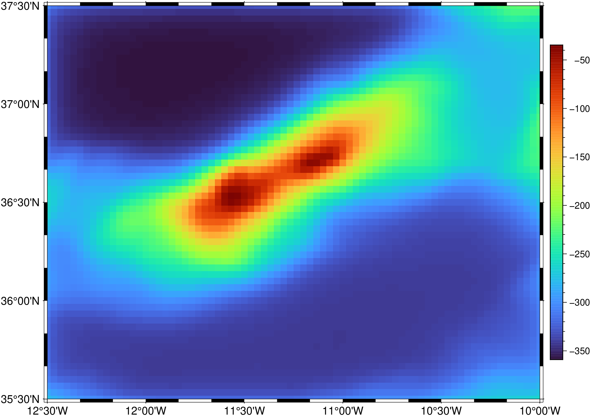
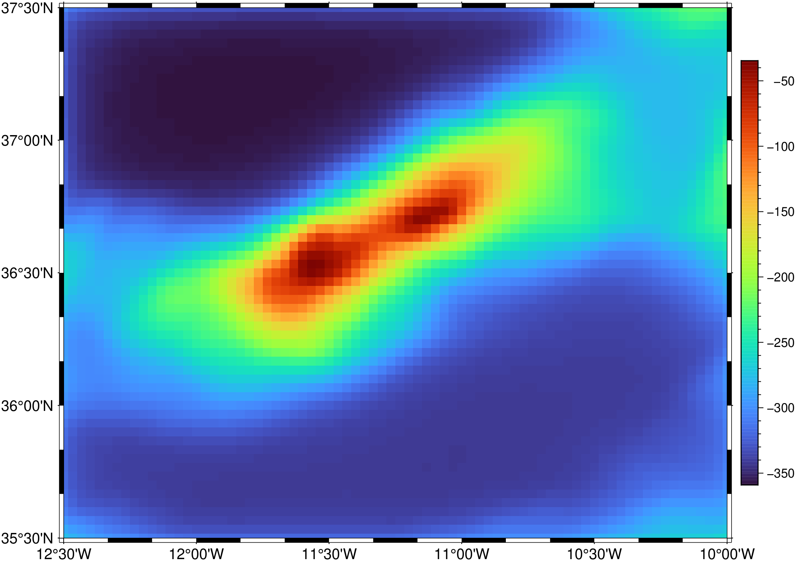

using GMT, FFTW
G = grdcut("@earth_relief_02m", region=(-12.5,-10,35.5,37.5));
G2 = gravfft(G, density=1700, field=(faa=6, slab=4), f=:g);
imshow(G2, colorbar=true)
Spectral calculations of gravity, isostasy, admittance, and coherence for grids.
gravfft can be used into three main modes;
Mode 1: Simply compute the geopotential due to the surface given in the topo.grd file. Requires a density contrast (density) and possibly a different observation level(level). It will take the 2-D forward FFT of the grid and use the full Parker’s method up to the chosen terms.
Mode 2: Compute the geopotential response due to flexure of the topography file. It will take the 2-D forward FFT of the grid and use the full Parker’s method applied to the chosen isostatic model. The available models are the “loading from top”, or elastic plate model, and the “loading from below” which accounts for the plate’s response to a sub-surface load (appropriate for hot spot modeling). In both cases, the model parameters are set with topo_load and moho_depth options.
Mode 3: compute the admittance or coherence between two grids. The output is the average in the radial direction. Optionally, the model admittance may also be calculated. Given the number of choices this program offers, is difficult to state what are options and what are required arguments. It depends on what you are doing; see the examples for further guidance.
One or two 2-D gridded data sets to be processed.
C or tadmitt : – tadmitt=(n=?,wavelength=?,mean_depth=?, from_top=true, from_below=true, wavelengths=true)
Compute only the theoretical admittance curves of the selected model and exit. n and wavelength are used to compute (n * wavelength) the total profile length in meters. mean_depth is the mean water depth. Append information if model is from_top or from_below and optionally wavelengths=true to write wavelength instead of frequency.
D or density : – density=? | density=rhogrid
Sets density contrast across surface. Used, for example, to compute the gravity attraction of the water layer that can later be combined with the free-air anomaly to get the Bouguer anomaly. In this case do not use topo_load. It also implicitly sets dimentions=“+h”. Alternatively, specify a co-registered grid, rhogrid, either in the form of a file name or a GMTgrid objec, with density contrasts if a variable density contrast is required. Note: Any NaNs found in the density grid will be replaced with the minimum density found.
E or nterms : – nterms=n
Number of terms used in Parker expansion (limit is 10, otherwise terms depending on n will blow out the program) [Default = 3].
F or field : – field=(faa=true, slab=true, far_field=true, bouguer=true, geoid=true, vgg=true, east=true, north=true)
Specify desired geopotential field: compute geoid rather than gravity
G or save or outgrid or outfile : – save=file_name.grd
Write one or more fields directly to grids on disk or return them to the Julia REPL as grid objects. If more than one field is specified via fields then file_name must contain the format flag %s so that we can embed the field code in the file names.
I or admitt : – admitt=(wavelengths=true, km=true, coherence=true, tadmitt=true, elastic=true)
Use ingrid2 and ingrid1 (a grid with topography/bathymetry) to estimate admittance or coherence and rturn it in a GMTdataset (outgrid ignored if set). This grid should contain gravity or geoid for the same region of ingrid1. Default computes admittance. Output contains 3 or 4 columns. Frequency (wavelength), admittance (coherence) one sigma error bar and, optionally, a theoretical admittance. Use one to three from: wavelengths, km, tadmitt, coherence, elastic, wavelengths writes wavelength instead of wavenumber, km selects km for wavelength unit [m], coherence computes coherence instead of admittance, tadmitt writes a fourth column with “loading from below” theoretical admittance, and elastic writes a fourth column with “elastic plate” theoretical admittance.
N or dimensions or inquire : – dimensions=[a|f|m|r|s|nx/ny][+a|d|h|l][+e|n|m][+t_width_][+v][+w[suffix]][+z[p]]
Choose or inquire about suitable grid dimensions for FFT and set optional parameters. Control the FFT dimension via these directives:
Q or flex_topo : – flex_topo=true
Return/saves out a grid with the flexural topography (with z positive up) whose average depth was set by moho_depth=zm and model parameters by topo_load. That is the “gravimetric Moho”. flex_topo implicitly sets -N+h.
S or :S :subplate : – :S :subplate=true
Computes predicted gravity or geoid grid due to a subplate load produced by the current bathymetry and the theoretical model. The necessary parameters are set within topo_load and moho_depth options. The number of powers in Parker expansion is restricted to 1. See an example further down.
T or topo_load : – topo_load=(ethickness=?, rho_load=?, rho_mantle=?, rho_infill=?, moho=true)
Compute the isostatic compensation from the topography load (input grid file) on an elastic plate of thickness ethickness. Also append densities for load, mantle, water and infill in SI units. If rho_infill is not provided it defaults to rho_load. Give average mantle depth via moho_depth. If the elastic thickness is > 1e10 it will be interpreted as the flexural rigidity (by default it is computed from ethickness and Young modulus). Optionally, moho=true to write a grid with the Moho’s geopotential effect (see geopotential) from model selected by topo_load. If ethickness = 0 then the Airy response is returned. moho=true implicitly sets -N+h.
W or level : – level=wd[k]
Set the observation height relative to topography in meters [0]. Append k to indicate km. In this later case, the whole option must ofc be a string.
Z or moho_depth : – moho_depth=zm[/zl]
Moho [and swell] average compensation depths (in meters positive down – the depth). For the “load from top” model you only have to provide zm, but for the “loading from below” don’t forget to supply also zl.
V or verbose : – verbose=true | verbose=level
Select verbosity level. More at verbose
f or colinfo : – colinfo=??
Specify the data types of input and/or output columns (time or geographical data). More at
If the grid does not have meter as the horizontal unit, append +u unit to the input file name to convert from the specified unit to meter. If your grid is geographic, convert distances to meters by supplying colinfo instead.
netCDF COARDS grids will automatically be recognized as geographic. For other grids geographical grids were you want to convert degrees into meters, select colinfo. If the data are close to either pole, you should consider projecting the grid file onto a rectangular coordinate system using grdproject.
Since we cannot take FFTs of 2-D grids that contain NaNs, we perform simple substitutions. If any of the input grids contain NaNs they will be replaced with zeros. In contrast, if density passes a grid with density contrasts then we replace any NaNs with the minimum density in the grid.
The default detrending mode follows Parker [1972] and removes the mid-value (+h). Consult and use inquire to select other modes.
The FFT solution to elastic plate flexure requires the infill density to equal the load density. This is typically only true directly beneath the load; beyond the load the infill tends to be lower-density sediments or even water (or air). Wessel [2001] proposed an approximation that allows for the specification of an infill density different from the load density while still allowing for an FFT solution. Basically, the plate flexure is solved for using the infill density as the effective load density but the amplitudes are adjusted by a factor A = sqrt ((rm - ri)/(rm - rl)), which is the theoretical difference in amplitude due to a point load using the two different load densities. The approximation is very good but breaks down for large loads on weak plates, a fairy uncommon situation.

Other hypothetic examples.
To compute the effect of the water layer above the bat.grd bathymetry using 2700 and 1035 for the densities of crust and water and returning the result on Gwater (computing up to the fourth power of bathymetry in Parker expansion):
Now subtract it from your free-air anomaly faa.grd and you will get the Bouguer anomaly. You may wonder why we are subtracting and not adding. After all the Bouguer anomaly pretends to correct the mass deficiency presented by the water layer, so we should add because water is less dense than the rocks below. The answer relies on the way gravity effects are computed by the Parker’s method and practical aspects of using the FFT.
Want an MBA anomaly? Well compute the crust mantle contribution and add it to the sea-bottom anomaly. Assuming a 6 km thick crust of density 2700 and a mantle with 3300 density we could repeat the command used to compute the water layer anomaly, using 600 (3300 - 2700) as the density contrast. But we now have a problem because we need to know the mean Moho depth. That is when the scale/offset that can be appended to the grid’s name comes in hand. Notice that we didn’t need to do that before because mean water depth was computed directly from data (notice also the negative sign of the offset due to the fact that z is positive up):
Now, subtract it from the Bouguer to obtain the MBA anomaly. That is:
To compute the Moho gravity effect of an elastic plate bat.grd with Te = 7 km, density of 2700, over a mantle of density 3300, at an average depth of 9 km
If you add now the sea-bottom and Moho’s effects, you will get the full gravity response of your isostatic model. We will use here only the first term in Parker expansion.
The same result can be obtained directly by the next command. However, PAY ATTENTION to the following. I don’t yet know if it’s because of a bug or due to some limitation, but the fact is that the following and the previous commands only give the same result if nterms=1 is used. For higher powers of bathymetry in Parker expansion, only the above example seams to give the correct result.
And what would be the geoid anomaly produced by a load at 50 km depth, below a region whose bathymetry is given by bat.grd, a Moho at 9 km depth and the same densities as before?
To compute the admittance between the topo.grd bathymetry and faa.grd free-air anomaly grid using the elastic plate model of a crust of 6 km mean thickness with 10 km effective elastic thickness in a region of 3 km mean water depth:
To compute the admittance between the topo.grd bathymetry and geoid.grd geoid grid with the “loading from below” (LFB) model with the same as above and sub-surface load at 40 km, but assuming now the grids are in geographic and we want wavelengths instead of frequency:
To compute the gravity theoretical admittance of a LFB along a 2000 km long profile using the same parameters as above
Luis, J.F. and M.C. Neves. 2006, The isostatic compensation of the Azores Plateau: a 3D admittance and coherence analysis. J. Geothermal Volc. Res. Volume 156, Issues 1-2, Pages 10–22, https://doi.org/10.1016/j.jvolgeores.2006.03.010 <https://doi.org/10.1016/j.jvolgeores.2006.03.010>_
Parker, R. L., 1972, The rapid calculation of potential anomalies, Geophys. J., 31, 447–455.
Wessel. P., 2001, Global distribution of seamounts inferred from gridded Geosat/ERS-1 altimetry, J. Geophys. Res., 106(B9), 19,431–19,441, https://doi.org/10.1029/2000JB000083 <https://doi.org/10.1029/2000JB000083>_
This function has multiple methods:
gravfft(cmd0::String; ...) - gravfft.jl:52gravfft(; ...) - gravfft.jl:52gravfft(cmd0::String, arg1, arg2; kwargs...) - gravfft.jl:52gravfft(cmd0::String, arg1; ...) - gravfft.jl:52gravfft(arg1, arg2; kw...) - gravfft.jl:51gravfft(arg1; ...) - gravfft.jl:51